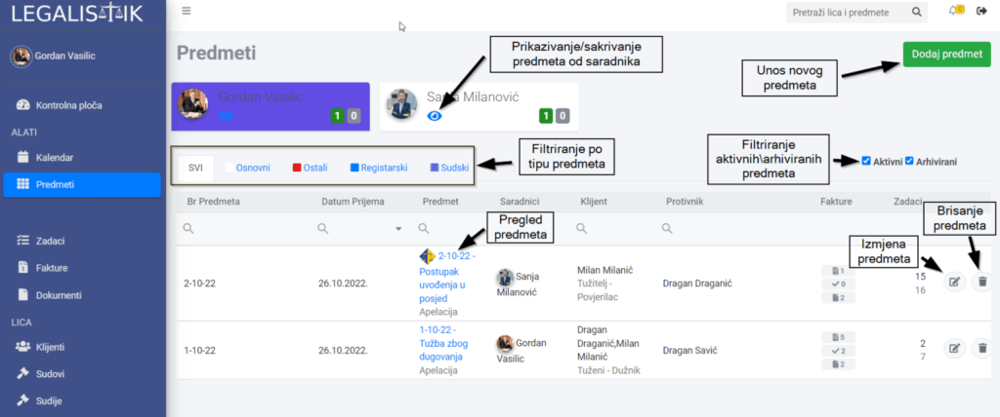
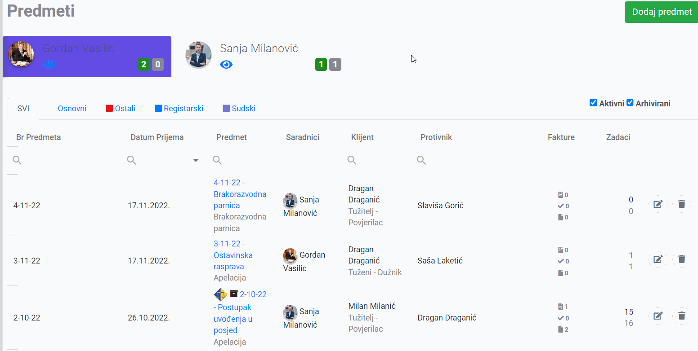

Predmeti su centralno mjesto za praćenje svih aktivnosti u vezi sa predmetima, uključujući zadatke, dokumente i fakture.

Lista predmeta #
Pri otvaranju Predmeta, prikazuje se lista koju možemo filtrirati po svim kolonama, tako što u polje ispod naziva kolone unesemo traženi pojam.

Takođe, možemo filtrirati po saradniku, po tipu predmeta pomoću kartica iznad liste predmeta, ali i po tome da li su aktivni li arhivirani.
Unos novog predmeta #
- Otvorite Predmete i kliknite na dugme Dodaj predmet u gornjem desnom uglu
- Popunite potrebna polja vezana za predmet (opis polja pogledajte ispod)
- Kliknite na dugme Snimi promjene u gornjem desnom uglu
Opis polja u Predmetima #
- Podaci o predmetu
- Redni broj – dodjeljuje se automatski.
- Broj predmeta – dodjeljuje se automatski, potrebno je postaviti željeni šablon u Podešavanjima.
- Datum prijema – obavezno polje.
- Tip predmeta – kategorizacija po tipu predmeta (izmjena tipova u Podešavanjima).
- Kategorija predmeta – kategorizacija po tipu predmeta (izmjena kategorija u Podešavanjima)- obavezno polje.
- Saradnici – odabir sararadnika koji su uključeni u predmet. Prethodno je potrebno unijeti saradnike u Podešavanjima. Odabranim saradnicima novi predmet će se pojaviti u listi predmeta, uz obavještenje putem email poruke – obavezan bar jedan saradnik.
- Pozicija klijenta – da li je klijent tužitelj ili tuženi – obavezno polje.
- Klijent – odabrati klijenta, ili više njih. Nove klijente možete dodati klikom na ikonu plus na desnoj strani polja ili u dijelu Klijenti u meniju – obavezno polje.
- Pozicija protivnika – da li je protivnik tužitelj ili tuženi – obavezno polje.
- Protivnik – unijeti protivnika ili više njih – tekstualno polje.
- Opis predmeta
- Vriednost spora
- Stručni saradnik na sudu – osoba na sudu zadužena za predmet
- Sud/Sudija – odabir suda i sudije, unos broja sudskog predmeta i datuma prijema na sudu. Sudove i sudije je moguće dodavati u dijelu Sudovi i Sudije u meniju.
- Statusi predmeta – odabir trenutnog statusa predmeta i datum postavljanja novog statusa